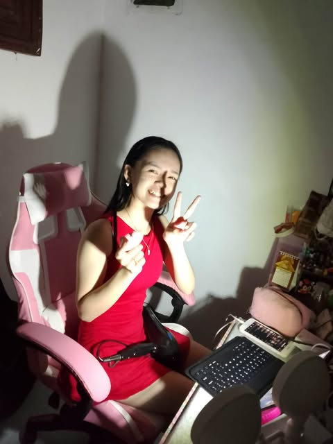

Happy New Year Broskiee!!! At for sure kinabukasan mo 'to makikita.
HAPPY NEW YEAR SA TROPA KONG PUSA!!! Gulat ka noh kasi gumawa parin ako? Para sa new year 'to at may
sasabihin lang ako na importante. Again Happy New Year sa'yo at sa fam mo stay happy and make a bunch of memories together pero
sorry kasi 'di talaga yan ang main content neto at sinama ko lang talaga. Sorry pero 'di ko parin nagagawa yung suggestion mo about
sa website na puro au na may sound pero pramis tinatry kong gawin pero nahihirapan lang ako. And I think baka next
year ko pa yun matapos. By the way, random but I know na may mga probs ka parin ngayon mapa RS, acads, friends, o kahit na sa
pamilya. This might sound rude to you knowing that you do this to comfort yourself but please stop doing that thing, It will make it
worst. You can text me naman at mag rant ka lang knowing na gusto mo na may makikinig sa'yo and don't worry,
I'll listen to it attentively. You're also my real friend but not just a real friend 'cause you became my stranger, best friend, sister,
mother, nurse, attorney, adviser, teacher, helper, rival, wallet, at halos lahat na pero lastly my dream girl. And
what's shocking is that I guess gusto parin kita. This might sound weird but after talking to other girls and making myself work it,
eh ikaw parin talaga and I don't know why. Pero 'di ako mangingialam sa RS niyo respect parin, siguro pag matagal na. I also
cherish and keep our friendship alive and happy kahit na 'di na tayo lagi magkasama and sigurado ako na yung pov dati ay ganon parin
ngayon. Dati ay gusto ko na talaga mag confess lalo na nung G7 kaso eh si C na crush mo like na down ako eh pogi eh
so 'di ko tinuloy. Nung G8 naman si Sair naman, nung medjo malabo na kayo nag try ako kaso si J dumating so ayun lahat na urong
pero thankfully nakapag confess parin ako kahit papano kasi kaya kong kalabanin lahat ng nagkakagusto sa'yo pero 'di ko kaya
na kalabanin ang taong gusto mo. By the way, totoo ba 'to? Actually nagulat rin ako that time.
Pero masaya ako kasi naramdaman mo siya kahit iniisip ko na hindi talaga. Sorry kasi kapag kukuha ka ng hall pass tinitignan kita.
And nahihiya rin ako na makipag eye contact sa'yo so same lang. Kahit na last money ko na yun,
ililibre parin kita lalo na pag gustom ka. And 'di naman mabigat yung bag mo at kahit late na tayo umuwi dahil sa training mo ay okay
lang at least kasama kita at sure ako na safe ka rin. Also I'll always check if you're okay, I mean may pake ako sa'yo eh
and pa'no mo nasabi na 'di mo kayang suklian pagmamahal ko na sa totoo lang kahit 50% na sukli mo na sa pagiging magkaibigan natin.
And I'm really shock na sobra na pagmamahal na naibigay ko sa'yo kahit na parang bare minimun lang yun saakin.
And I really tried my best sa pagiging gentleman pero gentleman ba ako dun? AND BRO KAHIT MATAGAL TRAINING MO OKAY LANG, NUNG
NAGKASAKIT NGALANG AKO 'DI OKAY DUN. Yung plushie ko pala nilalabahan ba 'yan? Pag talaga hindi nako.
Sorry pala kung nagbago ako nung 4th q lalo na pag kasama mo si J, wala lang jalusi ata?? By the way,
what do you mean na "i never expect it to be like that"? Low gets ako my bad. Kahit ubos na pera ko tinatry ko parin
na bilhan ka ng yumburger, dutch mill, gulp, popple, jollibee, doughnut, at fries kasi dapat busog ka eh. 'di ka pa nakain ng matino at
kailangan ko pa ba na mag lagay ng context box eh kasi alam mo na 'yan eh so 'wag na.
{kind=link}
{kind=link}
{kind=link}
{kind=link}
{kind=link}
{kind=link}
{kind=link}
{kind=link}
{kind=link}
{kind=link}
{kind=link}
{kind=link}
{kind=link}
{kind=link}
{kind=link}
Ahm weird topic pero need ko lang linawin na pa-fade na yung feelings ko sa'yo nung nag meet kami ni Amber pero after matapos
ng you know eh andun parin yung feelings ko sa'yo like may natira. Pero nung na-meet ko si Franzell literal na nawala talaga kasi akala
ko nun siya na yung mabibigyan ko ng parehas na attention at pagmamahal na katulad sa'yo so kinalimutan ko na yung sa'yo pero ang
ending yun na nga wala rin. Random ulit pero sorry if may mga oras talaga na 'di kita sinasamahan sa gala kahit gusto
mo na may kasama ka pauwi. May reasons naman pero usually ang reason is kapag alam kong 3rd wheel nanaman like nawawalan ako
ng gana sumama. BY THE WAY 'DI KO CRUSH SI VINA OH HAUP SA'YO NGA AKO NAG PAPARINIG NUNG TIME NA YUN EH.
Galing mo pala nung time na 'to eh kasi nag reply ka sa note ko na para sa'yo talaga, act fool literal kasi ano yung note ko
medjo hihi tignan mo nalang yung context box. By the way, tanda mo ba nung pasukan nung early G8 tapos nag pa sm ako
tapos nag notes ako na sumakit puso ko nung makita yung photobooth? Para sa'yo yun huy, nung nakita ko photobooth niyo ni Sair ata yun
basta. Alam mo ba na ang saya ko nung nalaman ko na kaklase kita nung G8 kasi lilipat na ako eh pero nasulit pa kasi
kaklase kita, talon-talon pa nga ako nun eh. I'm not sure if nasabi ko na 'to sa'yo na dapat 'di na ako mag G-G8 sa SAA
kasi matagal ko na rin talagang pinag-iisipan yun at nung sure na ako, naisipan ko ng kunin card ko para makalipat na ako at sinabi ko yun
nung July 19, 2024. Kaso may isang nag chat sa'kin ng madaling araw na at 1:26 nag chat so July 20 na nun at tinanong niya man lang ako
kung lilipat na nga ba ako ng school at sabi ko naman oo, sinabi niya pa na wala ng bibili ng reviewer niya at tinanong niya rin kung after
1 year ay babalik ako at sabi ko naman ay oo. Sabi niya nga pa na ilibre ko siya ng Jabeli kahit nasa cumadcad na ako at nag joke nalang
ako nai-grab nalang. After namin mag usap 'di ako agad natulog kasi napa-isip ako na "Tama ba na lumipat na ako?" ulit-ulit kong inisip
hanggang sa nag decide na ako na hindi na ako lilipat. Gusto mo ba malaman kung sino yung nag pabago ng isip ko? Ikaw yun, proof?
eto context box. Hanggang ngayon ba ako parin yung ka vibes mo sa lahat ng male friends mo?
Alam mo ba na ano ang saya ko nung nag set ka ng NN sa chat natin na broskii? Kilig to the max ako nun HAHA AWIT YAN.
By the way, I TRAST U BRO PRAMIS SIMULA PALANG NUNG UNA. Also kung kinilig ako sa NN shempre kikiligin rin ako sa
pag change ng theme, mamahalin noh. Tae lam mo ba one time kinilig ako sa chat mo na kung walang kasama edi tayo nalang
magsama HAHAHA haup kilig to the very bone. Tapos nahihiya ako kasi unang gala natin pero babae mang lilibre like kahiya.
Pero ayoko tumanggi kasi galing sa'yo yung libre eh, thank you sa cookies & cream na ice cream galing sa dairyqueen.
Going back eh ako nga pala unang nag chat sa'yo noh, at least may maipapagmalaki ako kahit papano HAHAHA pero kasi ang
ganda rin ng kwento kung pa'no tayo nag kakilala talaga eh. So eto na nga, una tayong nag meet dahil sa kuya mo. Dismissal nun at pauwi
na ako pero tinawag niya ako at tinanong kung pwede ko siyang samahan antayin kapatid niya and ako naman 'to na gulat kasi MAY KAPATID
PALA SIYA AND HINDI KO ALAM. So sinamahan ko kasi curious ako kung sino eh tapos nung nag sabi na siya na andiyan na kapatid niya gulat ako kasi ikaw pala yun, by the way crush na kita bago ko pa malaman na kapatid ka niya so ang ending. Yeh gulat ako.
{kind=link}
{kind=link}
{kind=link}
{kind=link}
{kind=link}
{kind=link}
{kind=link}
{kind=link}
{kind=link}
{kind=link}
{kind=link}
{kind=link}
{kind=link}
And by the way if gusto mo malaman ano yung super duper little favor na yun, kapag nagkita nalang tayo ulit. Happy New Year Broskiee

cute
Just enjoy the music if natapos mo na yung letter tapos 'di pa tapos yung dalawang song.
Just click the envelope below to go back at main page or continue to home page.
Thank you.
Back to Main Page.
Continue to Home.